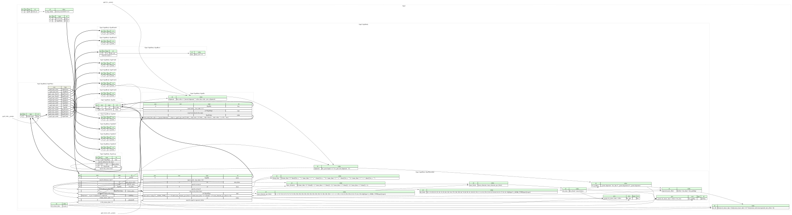

GGUF is the file format of the ggml tensor library for storing machine learning models, used for example by llama.cpp for inference. It replaced the older GGML, GGMF and GGJT formats.
A GGUF file consists of a header with metadata as key-value pairs (model architecture, hyperparameters, tokenizer, etc.), a description of each tensor (name, dimensions, type and offset), and finally the tensor data.
This page hosts a formal specification of GGUF (GGML Universal File) using Kaitai Struct. This specification can be automatically translated into a variety of programming languages to get a parsing library.

meta:
id: gguf
title: GGUF (GGML Universal File)
file-extension: gguf
xref:
pronom:
- fmt/2097 # GGUF v2
- fmt/2098 # GGUF v3
wikidata: Q127427530
license: CC0-1.0
ks-version: '0.11'
doc: |
GGUF is the file format of the [ggml](https://github.com/ggml-org/ggml)
tensor library for storing machine learning models, used for example by
[llama.cpp](https://github.com/ggml-org/llama.cpp) for inference. It
replaced the older GGML, GGMF and GGJT formats.
A GGUF file consists of a header with metadata as key-value pairs (model
architecture, hyperparameters, tokenizer, etc.), a description of each
tensor (name, dimensions, type and offset), and finally the tensor data.
doc-ref: https://github.com/ggml-org/ggml/blob/a05c9922613c6a2230dbb1d0de679519ecafb4f0/docs/gguf.md Git tag "v0.27.0"
seq:
- id: magic
contents: GGUF
doc: GGUF file magic
- id: body
type: gguf_body
instances:
version_le:
pos: 4
type: u4le
is_big_endian:
# https://github.com/ggml-org/ggml/blob/a05c9922613c6a2230dbb1d0de679519ecafb4f0/src/gguf.cpp#L499-L509 (Git tag "v0.27.0")
value: version_le & 0xffff == 0
len_file:
value: |
(
body.ofs_tensor_data + (
body.num_tensor_infos != 0
? body.tensor_infos.last.expected_next_offset
: 0
)
).as<u8>
-affected-by: 1333 # the cast can be removed once this is resolved
doc: |
Length of the file (computed from the header), including the padding after
the last tensor's data.
This Kaitai Struct implementation stops parsing where the tensor data
starts (which is read lazily, i.e. only on demand). Without reading the
tensor data, you can use this expected file size to check whether the file
has been truncated, to carve the file out of a larger one, etc.
types:
gguf_body:
meta:
endian:
switch-on: _root.is_big_endian
cases:
true: be
false: le
seq:
- id: version
type: u4
valid:
# https://github.com/ggml-org/ggml/blob/a05c9922613c6a2230dbb1d0de679519ecafb4f0/src/gguf.cpp#L494-L519 (Git tag "v0.27.0")
min: 2
max: 3
doc: |
File format version. Version 1 used 32-bit counts and lengths, which
this Kaitai Struct implementation doesn't support, and neither does
ggml.
- id: num_tensor_infos
type: u8
doc: The number of tensors in the file
- id: num_kv_pairs
type: u8
doc: The number of key-value pairs in the file header
- id: kv_pairs
type: 'gguf_kv(_index != 0 ? kv_pairs[_index - 1].alignment : 32)'
repeat: expr
repeat-expr: num_kv_pairs
doc: |
Key-value pairs. ggml (v0.27.0)
[rejects](https://github.com/ggml-org/ggml/blob/a05c9922613c6a2230dbb1d0de679519ecafb4f0/src/gguf.cpp#L575-L578)
duplicate keys, but this Kaitai Struct implementation can't detect
them. If there are multiple `general.alignment` keys, the last one is
used for the `alignment` value instance.
- id: tensor_infos
type: 'gguf_tensor_info(_index != 0 ? tensor_infos[_index - 1].expected_next_offset : 0)'
repeat: expr
repeat-expr: num_tensor_infos
doc: |
Tensor metadata. ggml (v0.27.0)
[rejects](https://github.com/ggml-org/ggml/blob/a05c9922613c6a2230dbb1d0de679519ecafb4f0/src/gguf.cpp#L664-L669)
duplicate tensor names, but this Kaitai Struct implementation can't
detect them.
- id: padding
size: (alignment - _io.pos % alignment) % alignment
if: num_tensor_infos != 0
doc-ref: https://github.com/ggml-org/ggml/blob/a05c9922613c6a2230dbb1d0de679519ecafb4f0/src/gguf.cpp#L780-L785 Git tag "v0.27.0"
- size: 0
if: ofs_tensor_data < 0
instances:
ofs_tensor_data:
# `u8` because it's added to `offset`
value: _io.pos.as<u8>
doc: |
Offset of the tensor data. Each tensor's `offset` is relative to this
position.
alignment:
-orig-id: ALIGNMENT # used in the `gguf.md` document
value: 'kv_pairs.size != 0 ? kv_pairs.last.alignment : 32'
doc: |
Global alignment - from the `general.alignment` key, or 32 if there's no
such key.
doc-ref: https://github.com/ggml-org/ggml/blob/a05c9922613c6a2230dbb1d0de679519ecafb4f0/src/gguf.cpp#L622-L630 Git tag "v0.27.0"
types:
gguf_value:
-orig-id: gguf_metadata_value_t
doc-ref: https://github.com/ggml-org/ggml/blob/a05c9922613c6a2230dbb1d0de679519ecafb4f0/docs/gguf.md?plain=1#L239-L260 Git tag "v0.27.0"
-webide-representation: '{value}'
params:
- id: type
type: u4
enum: gguf_type
seq:
- id: value
type:
switch-on: type
cases:
gguf_type::uint8: gguf_uint8
gguf_type::int8: gguf_int8
gguf_type::uint16: gguf_uint16
gguf_type::int16: gguf_int16
gguf_type::uint32: gguf_uint32
gguf_type::int32: gguf_int32
gguf_type::float32: gguf_float32
gguf_type::bool: gguf_bool
gguf_type::string: gguf_str
gguf_type::array: gguf_array
gguf_type::uint64: gguf_uint64
gguf_type::int64: gguf_int64
gguf_type::float64: gguf_float64
gguf_kv:
-orig-id: gguf_metadata_kv_t
doc-ref: https://github.com/ggml-org/ggml/blob/a05c9922613c6a2230dbb1d0de679519ecafb4f0/docs/gguf.md?plain=1#L262-L275 Git tag "v0.27.0"
-webide-representation: '{key}: {value}'
params:
- id: prev_alignment
type: u4
seq:
- id: key
type: gguf_str
valid:
# https://github.com/ggml-org/ggml/blob/a05c9922613c6a2230dbb1d0de679519ecafb4f0/src/gguf.cpp#L571-L574 (Git tag "v0.27.0")
expr: _.len_value != 0
-affected-by: 1260 # this `valid/expr` doesn't compile in C++11
- id: type
type: u4
enum: gguf_type
valid:
# https://github.com/ggml-org/ggml/blob/a05c9922613c6a2230dbb1d0de679519ecafb4f0/src/gguf.cpp#L593-L612 (Git tag "v0.27.0")
in-enum: true
- id: value
type: gguf_value(type)
valid:
# `general.alignment` must be a `uint32` and a power of 2:
# https://github.com/ggml-org/ggml/blob/a05c9922613c6a2230dbb1d0de679519ecafb4f0/src/gguf.cpp#L622-L636 (Git tag "v0.27.0")
expr: |
key.value == "general.alignment"
? (
type == gguf_type::uint32 and
_.value.as<gguf_uint32>.value != 0 and
_.value.as<gguf_uint32>.value & (_.value.as<gguf_uint32>.value - 1) == 0
)
: true
-affected-by: 1260 # this `valid/expr` doesn't compile in C++11
instances:
alignment:
value: |
key.value == "general.alignment"
? value.value.as<gguf_uint32>.value
: prev_alignment
gguf_str:
-orig-id: gguf_string_t
doc-ref: https://github.com/ggml-org/ggml/blob/a05c9922613c6a2230dbb1d0de679519ecafb4f0/docs/gguf.md?plain=1#L232-L237 Git tag "v0.27.0"
-webide-representation: '"{value}"'
seq:
- id: len_value
type: u8
- id: value
size: len_value
type: str
encoding: UTF-8
gguf_array:
doc: |
Nested arrays are supported. Although ggml (v0.27.0) doesn't support them,
they are explicitly allowed by `gguf.md` - see
<https://github.com/ggml-org/ggml/blob/a05c9922613c6a2230dbb1d0de679519ecafb4f0/docs/gguf.md?plain=1#L221>.
-webide-representation: '{num_elems:dec} elements'
seq:
- id: type
type: u4
enum: gguf_type
valid:
# Like ggml, except that nested arrays are allowed (see the `doc` above):
# https://github.com/ggml-org/ggml/blob/a05c9922613c6a2230dbb1d0de679519ecafb4f0/src/gguf.cpp#L593-L612 (Git tag "v0.27.0")
in-enum: true
- id: num_elems
type: u8
- id: elems
type: gguf_value(type) # Allows for nested arrays
repeat: expr
repeat-expr: num_elems
gguf_bool:
# This type is used as a work-around for languages (like C++)
# that do not support variant types.
-webide-representation: '{value}'
seq:
- id: value_raw
type: u1
valid:
# ggml doesn't check this, but `gguf.md` says that anything other than
# 0 or 1 is invalid:
# https://github.com/ggml-org/ggml/blob/a05c9922613c6a2230dbb1d0de679519ecafb4f0/docs/gguf.md?plain=1#L213-L216 (Git tag "v0.27.0")
max: 1
instances:
value:
value: value_raw != 0
doc-ref: https://github.com/ggml-org/ggml/blob/a05c9922613c6a2230dbb1d0de679519ecafb4f0/src/gguf.cpp#L321 Git tag "v0.27.0"
gguf_uint8:
# This type is used as a work-around for languages (like C++)
# that do not support variant types.
-webide-representation: '{value:dec}'
seq:
- id: value
type: u1
gguf_int8:
# This type is used as a work-around for languages (like C++)
# that do not support variant types.
-webide-representation: '{value:dec}'
seq:
- id: value
type: s1
gguf_uint16:
# This type is used as a work-around for languages (like C++)
# that do not support variant types.
-webide-representation: '{value:dec}'
seq:
- id: value
type: u2
gguf_int16:
# This type is used as a work-around for languages (like C++)
# that do not support variant types.
-webide-representation: '{value:dec}'
seq:
- id: value
type: s2
gguf_uint32:
# This type is used as a work-around for languages (like C++)
# that do not support variant types.
-webide-representation: '{value:dec}'
seq:
- id: value
type: u4
gguf_int32:
# This type is used as a work-around for languages (like C++)
# that do not support variant types.
-webide-representation: '{value:dec}'
seq:
- id: value
type: s4
gguf_uint64:
# This type is used as a work-around for languages (like C++)
# that do not support variant types.
-webide-representation: '{value:dec}'
seq:
- id: value
type: u8
gguf_int64:
# This type is used as a work-around for languages (like C++)
# that do not support variant types.
-webide-representation: '{value:dec}'
seq:
- id: value
type: s8
gguf_float32:
# This type is used as a work-around for languages (like C++)
# that do not support variant types.
-webide-representation: '{value:dec}'
seq:
- id: value
type: f4
gguf_float64:
# This type is used as a work-around for languages (like C++)
# that do not support variant types.
-webide-representation: '{value:dec}'
seq:
- id: value
type: f8
gguf_tensor_info:
-orig-id: gguf_tensor_info_t
doc-ref: https://github.com/ggml-org/ggml/blob/a05c9922613c6a2230dbb1d0de679519ecafb4f0/docs/gguf.md?plain=1#L305-L325 Git tag "v0.27.0"
-webide-representation: '{name}: {type}[{dump_dims}]'
params:
- id: expected_offset
type: u8
seq:
- id: name
type: gguf_str
valid:
# https://github.com/ggml-org/ggml/blob/a05c9922613c6a2230dbb1d0de679519ecafb4f0/src/gguf.cpp#L657-L661 (Git tag "v0.27.0")
expr: _.len_value < 64
-affected-by: 1260 # this `valid/expr` doesn't compile in C++11
- id: num_dims
type: u4
valid:
# https://github.com/ggml-org/ggml/blob/a05c9922613c6a2230dbb1d0de679519ecafb4f0/src/gguf.cpp#L679-L684 (Git tag "v0.27.0")
max: 4
- id: dims
type: s8
valid:
# ggml reads them as `int64_t` too (even though `gguf.md` says
# `uint64_t`) and rejects negative ones:
# https://github.com/ggml-org/ggml/blob/a05c9922613c6a2230dbb1d0de679519ecafb4f0/src/gguf.cpp#L691-L697 (Git tag "v0.27.0")
min: 0
repeat: expr
repeat-expr: num_dims
- id: type
type: u4
enum: ggml_type
valid:
# ggml accepts only types it can still read (`num_elements_per_block`
# must not be 0), and only rows consisting of whole blocks:
# https://github.com/ggml-org/ggml/blob/a05c9922613c6a2230dbb1d0de679519ecafb4f0/src/gguf.cpp#L729-L746 (Git tag "v0.27.0")
expr: |
_.to_i < 43 and
num_elements_per_block != 0 and
(num_dims > 0 ? dims[0] : 1) % num_elements_per_block == 0
- id: offset
type: u8
# Each tensor's data must start right where the previous tensor's padded
# data ends (the first tensor's data offset must be 0), as in ggml:
# https://github.com/ggml-org/ggml/blob/a05c9922613c6a2230dbb1d0de679519ecafb4f0/src/gguf.cpp#L790-L820 (Git tag "v0.27.0")
valid: expected_offset
doc: Offset of the tensor's data, relative to `_parent.ofs_tensor_data`
instances:
dump_dims:
value: |
(num_dims > 0 ? dims[0].to_s : "")
+ (num_dims > 1 ? " x " + dims[1].to_s : "")
+ (num_dims > 2 ? " x " + dims[2].to_s : "")
+ (num_dims > 3 ? " x " + dims[3].to_s : "")
doc: |
`dims` joined with the string `" x "`. This is necessary for
`-webide-representation`, which cannot format `dims` directly -
see <https://github.com/kaitai-io/kaitai_struct_webide/issues/160>.
num_elements:
value: |
(
(num_dims > 0 ? dims[0] : 1) *
(num_dims > 1 ? dims[1] : 1) *
(num_dims > 2 ? dims[2] : 1) *
(num_dims > 3 ? dims[3] : 1)
).as<s8>
-affected-by: 1333 # the cast can be removed once this is resolved
# `num_elements_per_block` and `len_block` are the `.blck_size` and
# `.type_size` fields of `type_traits[type]` in ggml, see
# https://github.com/ggml-org/ggml/blob/a05c9922613c6a2230dbb1d0de679519ecafb4f0/src/ggml.c#L643-L957 (Git tag "v0.27.0")
#
# For removed types, both fields are 0, as in ggml.
num_elements_per_block:
-orig-id: blck_size
value: |
[
1, 1, 32, 32, 0, 0, 32, 32, 32, 32,
256, 256, 256, 256, 256, 256, 256, 256, 256, 256,
32, 256, 256, 256, 1, 1, 1, 1, 1, 256,
1, 0, 0, 0, 256, 256, 0, 0, 0, 32,
64, 128, 64
][type.to_i]
doc: Number of elements in a block
len_block:
-orig-id: type_size
value: |
[
4, 2, 18, 20, 0, 0, 22, 24, 34, 36,
84, 110, 144, 176, 210, 292, 66, 74, 98, 50,
18, 110, 82, 136, 1, 2, 4, 8, 8, 56,
2, 0, 0, 0, 54, 66, 0, 0, 0, 17,
36, 18, 18
][type.to_i]
doc: Size of a block in bytes
num_blocks:
value: (num_elements / num_elements_per_block).as<s8>
-affected-by: 1333 # the cast can be removed once this is resolved
len_data:
# `u8` (not `s8`) because it's added to `offset`
value: (len_block * num_blocks).as<u8>
len_padding:
value: (_parent.alignment - len_data % _parent.alignment) % _parent.alignment
doc: Number of padding bytes after the data
expected_next_offset:
value: (offset + len_data + len_padding).as<u8>
-affected-by: 1333 # the cast can be removed once this is resolved
doc: '`offset` that the next tensor must have'
data:
pos: _parent.ofs_tensor_data + offset
size: len_data
padding:
pos: _parent.ofs_tensor_data + offset + len_data
size: len_padding
doc: |
Padding after the data. ggml requires it even after the last tensor
when reading the tensor data.
doc-ref: https://github.com/ggml-org/ggml/blob/a05c9922613c6a2230dbb1d0de679519ecafb4f0/src/gguf.cpp#L884-L893 Git tag "v0.27.0"
enums:
# https://github.com/ggml-org/ggml/blob/a05c9922613c6a2230dbb1d0de679519ecafb4f0/include/gguf.h#L53-L68 (Git tag "v0.27.0")
gguf_type:
0: uint8
1: int8
2: uint16
3: int16
4: uint32
5: int32
6: float32
7: bool
8: string
9: array
10: uint64
11: int64
12: float64
# https://github.com/ggml-org/ggml/blob/a05c9922613c6a2230dbb1d0de679519ecafb4f0/include/ggml.h#L389-L434 (Git tag "v0.27.0")
ggml_type:
0: f32
1: f16
2: q4_0
3: q4_1
4:
id: q4_2
doc: |
Removed from ggml in May 2023, before GGUF was introduced. ggml
rejects it.
doc-ref: https://github.com/ggml-org/llama.cpp/commit/b9fd7eee57df101d4a3e3eabc9fd6c2cb13c9ca1
5:
id: q4_3
doc: |
Removed from ggml in April 2023, before GGUF was introduced. ggml
rejects it.
doc-ref: https://github.com/ggml-org/llama.cpp/commit/36d19a603b221d1bd7897fcb10e823e2103b052d
6: q5_0
7: q5_1
8: q8_0
9: q8_1
10: q2_k
11: q3_k
12: q4_k
13: q5_k
14: q6_k
15: q8_k
16: iq2_xxs
17: iq2_xs
18: iq3_xxs
19: iq1_s
20: iq4_nl
21: iq3_s
22: iq2_s
23: iq4_xs
24: i8
25: i16
26: i32
27: i64
28: f64
29: iq1_m
30: bf16
31:
id: q4_0_4_4
doc: |
Removed from ggml in December 2024 in favor of repacking
`ggml_type::q4_0` at load time. ggml rejects it, although files with it
exist, e.g.
[`Qwen2.5-0.5B-Instruct-Q4_0_4_4.gguf`](https://huggingface.co/bartowski/Qwen2.5-0.5B-Instruct-GGUF/blob/41ba88dbac95fed2528c92514c131d73eb5a174b/Qwen2.5-0.5B-Instruct-Q4_0_4_4.gguf).
doc-ref: https://github.com/ggml-org/llama.cpp/commit/19d8762ab61df8286367588a80b9c7db4cb568db
32:
id: q4_0_4_8
doc: |
Removed from ggml in December 2024 in favor of repacking
`ggml_type::q4_0` at load time. ggml rejects it, although files with it
exist, e.g.
[`Qwen2.5-0.5B-Instruct-Q4_0_4_8.gguf`](https://huggingface.co/bartowski/Qwen2.5-0.5B-Instruct-GGUF/blob/41ba88dbac95fed2528c92514c131d73eb5a174b/Qwen2.5-0.5B-Instruct-Q4_0_4_8.gguf).
doc-ref: https://github.com/ggml-org/llama.cpp/commit/19d8762ab61df8286367588a80b9c7db4cb568db
33:
id: q4_0_8_8
doc: |
Removed from ggml in December 2024 in favor of repacking
`ggml_type::q4_0` at load time. ggml rejects it, although files with it
exist, e.g.
[`Qwen2.5-0.5B-Instruct-Q4_0_8_8.gguf`](https://huggingface.co/bartowski/Qwen2.5-0.5B-Instruct-GGUF/blob/41ba88dbac95fed2528c92514c131d73eb5a174b/Qwen2.5-0.5B-Instruct-Q4_0_8_8.gguf).
doc-ref: https://github.com/ggml-org/llama.cpp/commit/19d8762ab61df8286367588a80b9c7db4cb568db
34: tq1_0
35: tq2_0
36:
id: iq4_nl_4_4
doc: |
Supported by ggml only from November to December 2024, and only for
repacking tensors in memory - it was never written to files. ggml
rejects it.
doc-ref: https://github.com/ggml-org/llama.cpp/commit/19d8762ab61df8286367588a80b9c7db4cb568db
37:
id: iq4_nl_4_8
doc: Reserved by ggml, but never supported. ggml rejects it.
doc-ref: https://github.com/ggml-org/llama.cpp/commit/c202cef1686182a78f8f4e253ab8d0c0ffe2fcc8
38:
id: iq4_nl_8_8
doc: Reserved by ggml, but never supported. ggml rejects it.
doc-ref: https://github.com/ggml-org/llama.cpp/commit/c202cef1686182a78f8f4e253ab8d0c0ffe2fcc8
39: mxfp4
40: nvfp4
41: q1_0
42: q2_0